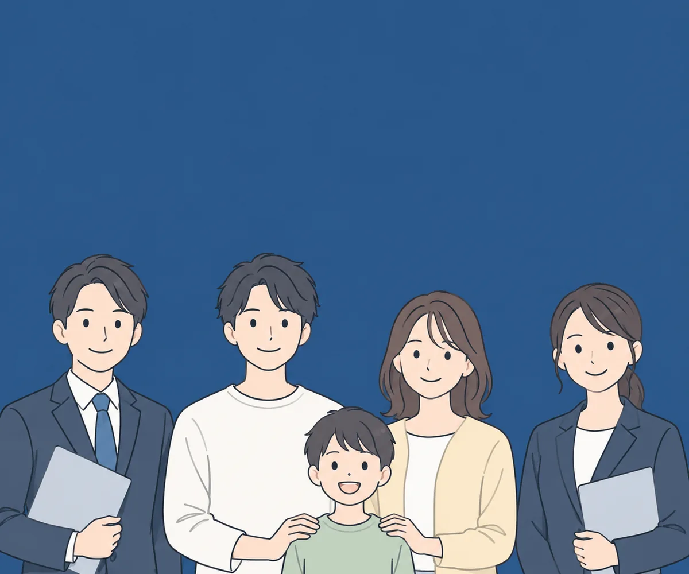

STORY
ご相談イメージ
※ご相談の流れをイメージしていただくための例です。実在の個人の事例ではありません。
- はじまり
「マイホームはまだ先」と思っていた
- LINEで相談
今の支払い状況と、住まいの希望を伝える
- 支払いの見直し
毎月の支払いの内訳を、ひとつずつ整理する
- 資金の準備
取得に向けて、必要な資金の見通しを立てる
- 住まいの取得
条件に合う住まいの取得を検討する
- 支払いの見直し
- 資金の準備
- 住まいの取得
を進め、住まいの計画がかたちになりました。
毎月の返済の見直しと、これからの資金の準備。
そして、資産になる住まいの取得。
住宅ローンを活用して、ひとつの計画として考えます。
確認の取れた事項のみを掲載しています。
WORRY ABOUT
ひとつでも当てはまるなら、
整理できる余地があるかもしれません。
住まいを
あきらめたくない方にも、
選択肢があります。

「今は無理だ」と思っていた条件が、
計画の立て方によって変わる場合があります。
STORY
※ご相談の流れをイメージしていただくための例です。実在の個人の事例ではありません。
「マイホームはまだ先」と思っていた
今の支払い状況と、住まいの希望を伝える
毎月の支払いの内訳を、ひとつずつ整理する
取得に向けて、必要な資金の見通しを立てる
条件に合う住まいの取得を検討する
を進め、住まいの計画がかたちになりました。
MECHANISM
いま別々になっている複数の支払いを整理することで、家計全体を見直せる可能性があります。どこまで整理できるかは、お客様ごとの状況によります。
現在の収入だけでなく、将来の計画や物件の価値も含めて住宅取得の計画を検討できる場合があります。
頭金・希望借入額・返済期間など、個々の資金状況に合わせて取得プランを設計します。状況に応じて、無理のない範囲をご一緒に確認します。
複数のお支払いも住まいの計画も
住宅ローンを活用して
ひとつの仕組みで検討できます
ご相談で確認できること
ご相談の結果を保証するものではありません。 ご利用の可否や条件は、お客様ごとの状況および金融機関の判断によります。
REASON
住宅ローンを活用して、返済の見直しと住まいの取得をひとつにする仕組みです
返済の見直し、資金の準備、住まいの取得。本来つながっているこの3つを、切り離さずにひとつの計画として考えます。
住まいの取得は終わりではなく始まりです。取得後の暮らしと家計まで見据えてご相談を承ります。
ご状況を丁寧にお聞きしたうえで、適切なご案内先へおつなぎします。
いま別々にお支払いのものについても、住宅ローンと一緒に検討できる場合があります。対象になるかどうかは、個別にご確認ください。
あてはまるか分からない、
という状態でも大丈夫です。
まずはお気軽にご相談ください。
CASE STUDY
ご相談事例はLINE登録後にご案内しています
LINEでご案内中
個別の事情に踏み込んだ内容のため、公開ページではなくLINEでご案内しています。
ご自身に近いケースを確認したうえで、ご相談いただけます。
※ 掲載する事例は、実在確認が取れたもののみです。
FAQ
ご相談いただけます。どこまで一緒に検討できるかはお客様ごとの状況によりますので、無料相談で個別にご確認ください。
一律の基準をこちらで設けてはいません。ご収入だけでなく、雇用形態・勤続年数・ご希望の返済期間など複数の要素をあわせて確認します。
ご相談いただけます。対象になるかどうかは個別の確認が必要です。
物件そのものだけでなく、いまのお支払いの状況と今後の資金計画をあわせて確認したうえで、住まいの取得を考える点が異なります。
はじめのお聞き取りは当窓口が行い、そのあとの具体的なご説明・ご提案・不動産のお取引は、宅地建物取引業の免許を持つご案内先が担当します。商号と免許番号はページ下部の運営者情報に記載しています。
ご相談の際に、対応可能かどうかをご確認ください。
LINEでのご相談のため、通知設定などはご自身で調整いただけます。ご相談内容をこちらから第三者にお伝えすることはありません（ご案内先への情報提供は、ご本人の同意をいただいた場合に限ります）。
費用が発生する場合は、事前に必ずご案内します。
もちろんです。お話をうかがったうえで、いまは動かないという判断でもかまいません。
STRUCTURE
ご相談の受付と、はじめのお聞き取りを行います。
ご本人の同意をいただいたうえで、ご状況をお伝えします。
具体的なご説明・ご提案と、不動産のお取引を担当します。
商号・免許番号・連絡先は、下の運営者情報に記載しています。 当窓口が行うのは、はじめのお聞き取りとお取次ぎまでです。
このページは、広告の掲載を開始する前に、掲載内容の取り扱いを確認するために公開しています。確認が完了するまでの間、ご相談の受付を停止しています。
掲載している内容および運営者情報は、広告を掲載する際に予定しているものと同じです。